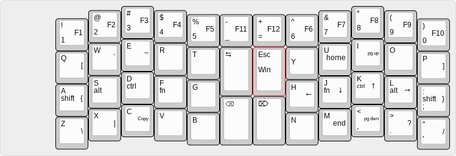
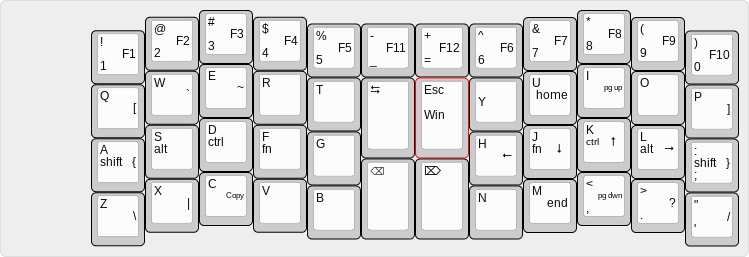

Modifier Keys in the Home Row
 With today’s opensource keyboard firmware, it is possible to use dual role keys to have all modifier keys in your home row.
The blog of Adam Gordon Bell (agbell)
 With today’s opensource keyboard firmware, it is possible to use dual role keys to have all modifier keys in your home row.
3-way merge works great for code merges in the majority of cases. Can we do better, however. Can we decrease the number of places where a manual conflict resolution is required. I would say, yes we can, if we know more about the syntax of the file in question.
Git merge drivers.
How to perform and update with a join using CTE’s in postgres
Here is a problem we encountered with NixOS:
The nix-channel we were on didn’t have the latest version of something we needed. This happened recently when my coworker upgraded to Postgres 9.5 from 9.4 but the PostGIS version in nixpkgs hadn’t been updated to a 9.5 compatible version.
NakedObjectsFramework antlr aop attribute-based-caching blog bluetooth books brain_gym c# ci clojure comedy cte data draft emacs ergodox essay euler f# faq field-level-authorization fitness git good-judgement-project gym hakyll haskell haskell-is-hard humor ideas keyboard merging nix nixos nparsec parsec parser parser-combinator paul-graham postgres postsharp prediction presentation release row-level-authorization scala slick tags thinkpad tuples update windows wordpress wssf